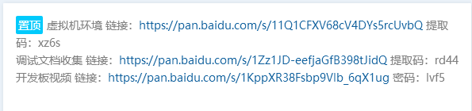

我们有提供虚拟机编译环境，可以免去编译环境的搭建。下载链接及使用文档可以在QQ交流群的群公告中找到

特别说明: 不能放在虚拟机的共享文件夹中编译！！！
编译环境搭建
SDK的编译建议使用 ubuntu18.04 或更高版本的操作系统，编译 SDK 环境搭建所依赖的软件包安装 命令如下
$ sudo apt-get install git bc bison build-essential curl flex g++-multilib \
gcc-multilib gnupg gperf imagemagick lib32ncurses5-dev lib32readline-dev \
lib32z1-dev liblz4-tool libncurses5-dev libsdl1.2-dev libssl-dev \
libwxgtk3.0-dev libxml2 libxml2-utils lzop pngcrush rsync schedtool \
squashfs-tools xsltproc yasm zip zlib1g-dev python device-tree-compiler \
expect g++ patchelf gawk texinfo chrpath diffstat binfmt-support \
qemu-user-static live-build fakeroot cmake python-pip repo \
ssh make gcc libssl-dev unzip ncurses-dev \
$ sudo pip install pyelftools
若编译遇到报错，可以视报错信息，安装对应的软件包
编译Android需要安装 openjdk-8-jdk
openjdk-8-jdk 默认会安装到/usr/lib/jvm/java-8-openjdk-amd64，如果不是安装在此目录下，在编译前修改编译脚本 make.sh。确保编译android 使用 openjdk 1.8
sudo apt-get install openjdk-8-jdk
在开始编译android 8.1之前需要保证编译终端环境jdk版本是1.8，否则无法完成android编译。可 以使用 java -version 查看终端当前 jdk 版本
$ java -version
java version "1.7.0_95"
OpenJDK Runtime Environment (IcedTea 2.6.4) (7u95-2.6.4-3)
OpenJDK 64-Bit Server VM (build 24.95-b01, mixed mode)